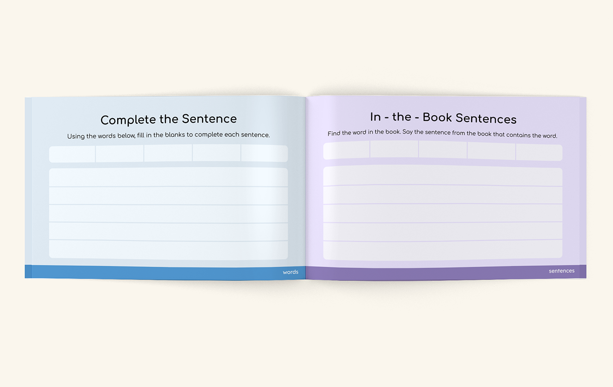
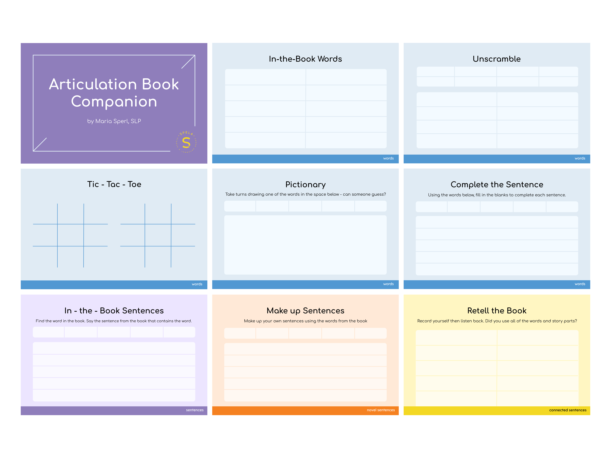
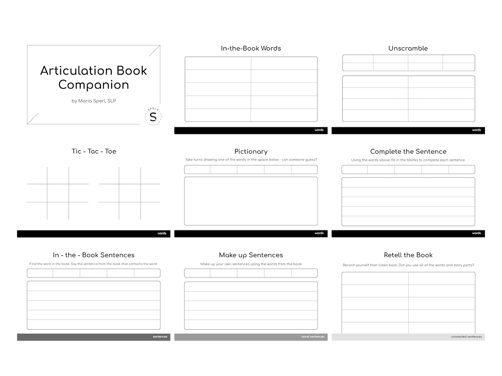

Canva - Adobe Photoshop
I was asked to design the layout for an Articulation Book Companion, an educational workbook for students in Speech-language Pathology.
I completed color and black and white versions within the established brand identity of Spela, Speech and Language Goods, created by Maria Sperl.


